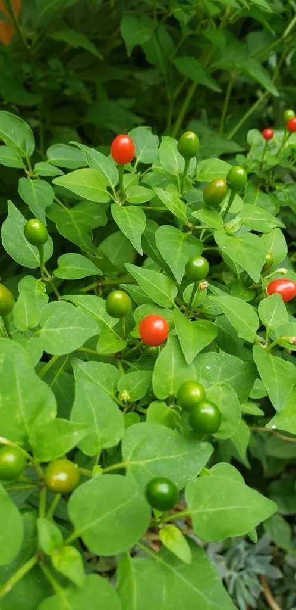

农作物与经济植物 · 植物界
辣椒 Capsicum annuum

辣椒果实中的辣椒素带来独特辣味，既可作调味蔬菜，又能提取天然色素与药用成分，是重要的经济作物。
- 分类
- 门被子植物门纲双子叶植物纲目茄目科茄科属辣椒属
- 栖息环境
- 温暖地区菜地与温室，喜充足光照、疏松肥沃土壤，不耐霜冻
- 地理分布
- 原产墨西哥与中美洲，现中国、印度、墨西哥等地广泛栽培
- 保护级别
- 暂无评估（栽培作物）
物种志
辣椒是茄科一年生或多年生草本，热带地区可多年生，株高 0.4–1.5 m，茎直立，分枝多。叶卵形或披针形，全缘，花白色或淡绿色，单生或簇生于叶腋。果实为浆果，形状多样，有长角形、圆锥形、灯笼形等，未成熟时绿色，成熟后多变为红色、黄色或紫色。果实内含辣椒素，集中在胎座和隔膜上，是辣味的来源；种子扁圆，淡黄色。
辣椒原产墨西哥与中美洲，约 6000 年前被驯化，是美洲原住民重要的调味品，哥伦布航海后传入欧洲，再经海路传入中国，现已成为川湘菜系不可或缺的食材。辣椒喜温暖、光照充足，不耐霜冻，适宜在疏松肥沃的土壤中栽培。除鲜食和调味外，辣椒可提取辣椒红素作天然色素，辣椒素还可用于医药、防虫和防狼喷雾；维生素 C 含量在蔬菜中名列前茅。
形态与习性
- 株高0.4–1.5 m，分枝多
- 果实浆果，形状多样
- 辣味来源果实胎座和隔膜中的辣椒素
- 花白色或淡绿色，单生或簇生
- 主要用途调味、天然色素与药用
- 原产地墨西哥与中美洲
- 耐寒性不耐霜冻
趣味知识
- 辣椒的辣味来自辣椒素，它并不作用于味觉，而是刺激痛觉神经。
- 辣椒约 6000 年前在美洲被驯化，明末才传入中国。
- 辣椒红素是重要的天然食品色素，可替代部分合成色素。